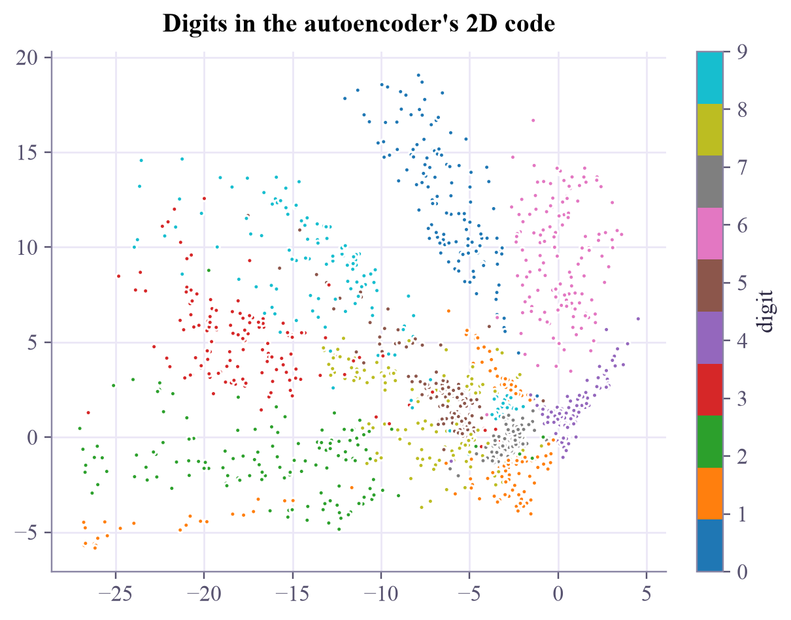
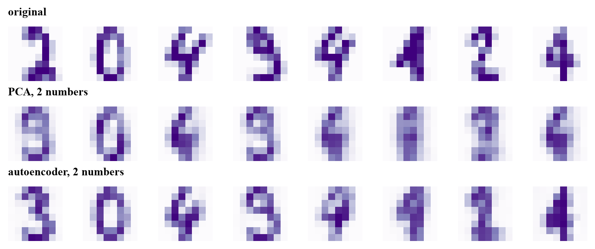
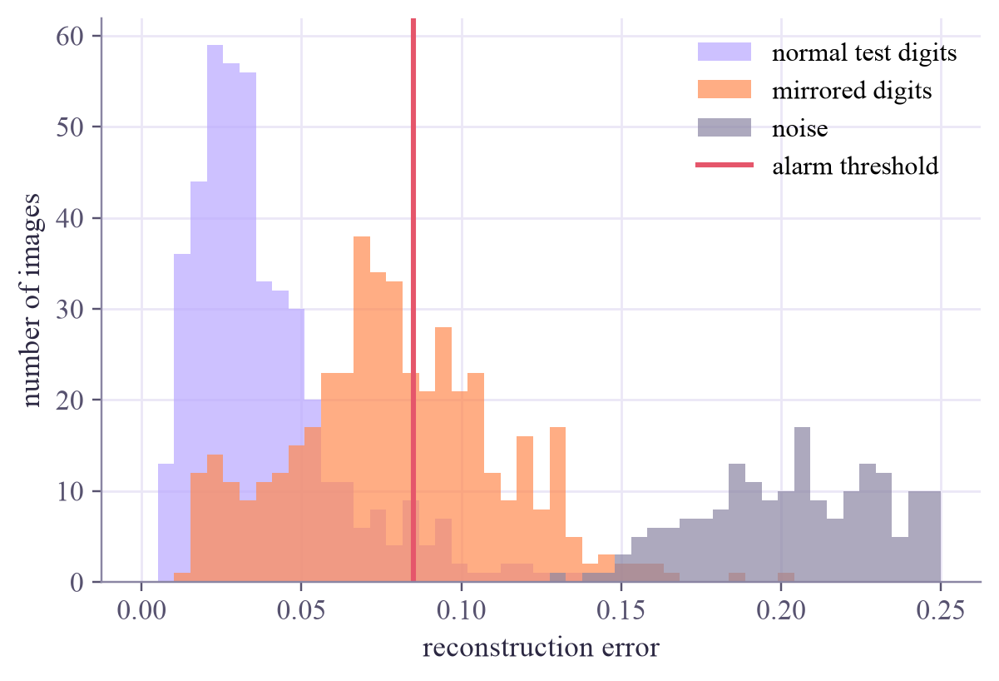
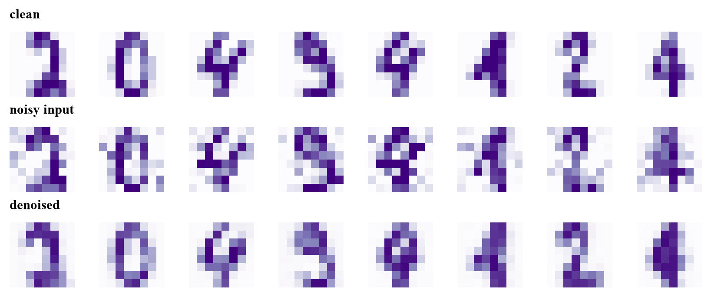

reconstruction error: training digits 0.0293, new test digits 0.0377
Machine Learning
 about 12 min
about 12 min ml-w6d4.ipynb
ml-w6d4.ipynb
Autoencoders
A neural network that learns to copy its input through a narrow bottleneck, and so learns its own compression, its own map of the data, and an alarm for the unusual.
In this lesson you will
- Build an autoencoder in PyTorch: encoder, bottleneck code, decoder
- Compare it with PCA, and explore the map its code draws
- Use reconstruction error to flag unusual data, and train a denoising autoencoder
Warm-up
1 minExplain it in two numbers

Imagine describing any handwritten digit to a friend using only two numbers, so that they can redraw it. You'd have to invent a clever code. An autoencoder invents one by itself, with no labels at all, and yesterday's PCA gives us something to beat.
Big idea
4 minAn hourglass network
An autoencoder is a neural network shaped like an hourglass:
The target is the input itself, so no labels are needed: it's unsupervised (or "self-supervised"). Because the middle is narrow, the code must keep what matters most about . The training is everything from week 5: backpropagation, Adam, the usual loop.
Against PCA. With only linear layers, an autoencoder finds the same subspace as PCA. Nonlinear layers let it bend: with the same 2 numbers per digit, it rebuilds new digits clearly better than PCA (the notebook measures it).
A map of the data. The code space is continuous. Every point of it, even where no training digit landed, decodes into some image: the decoder can "imagine" digits.
An alarm for the unusual. Trained on normal data, the autoencoder rebuilds normal data well and strange data badly. A large reconstruction error flags a possible anomaly: a faulty sensor, an odd transaction, a corrupted image. Where to put the threshold is a trade-off between false alarms and missed anomalies, just like the threshold in week 3.
Denoising. Feed it noisy inputs but ask for the clean originals, and it learns to remove the noise.
Squeeze through a bottleneck and rebuild: the code is a compression, the decoder is a generator, and the rebuild error is an anomaly score.
Play
4 minInside the bottleneck
The code map. Each dot is a training digit, placed by its two-number code (colors show the true digit, which the network never saw). Hover a dot to compare the digit with its rebuild; hover empty space and the decoder imagines a digit for that spot.
The alarm. The same network scores new test digits, the same digits mirrored left to right, and random noise. Slide the threshold.
Try this
In the map, slide slowly from the 0s to the 6s: the imagined digit morphs smoothly between them. In the alarm, find a threshold with about 5% false alarms. How many mirrored digits does it catch? Look at the thumbnails: why do the mirrored 0 and 8 sail through?
Code
2 minAutoencoders in PyTorch
The notebook for this lessonEvery code cell below, with what it printed, is in
ml-w6d4.ipynb. To change the code and run it yourself, open the notebook in Google Colab (free, in your browser) or download it for your own Jupyter.import numpy as np
import torch
import matplotlib.pyplot as plt
from sklearn.datasets import load_digits
from sklearn.model_selection import train_test_split
torch.set_num_threads(1)
digits = load_digits()
X = digits.data / 16.0 # 1797 images, 64 pixel values in [0, 1]
X_train, X_test, y_train, y_test = train_test_split(X, digits.target, test_size=0.25, random_state=0, stratify=digits.target)
T = lambda a: torch.tensor(a, dtype=torch.float32)
def train_autoencoder(inputs, targets, code_size=2, epochs=1500, seed=1):
"""Encoder 64 -> 32 -> code_size, decoder code_size -> 32 -> 64. Learns to turn inputs into targets."""
torch.manual_seed(seed)
encoder = torch.nn.Sequential(torch.nn.Linear(64, 32), torch.nn.Tanh(), torch.nn.Linear(32, code_size))
decoder = torch.nn.Sequential(torch.nn.Linear(code_size, 32), torch.nn.Tanh(), torch.nn.Linear(32, 64), torch.nn.Sigmoid())
optimizer = torch.optim.Adam(list(encoder.parameters()) + list(decoder.parameters()), lr=3e-3)
a, b = T(inputs), T(targets)
for _ in range(epochs):
optimizer.zero_grad()
loss = torch.nn.functional.mse_loss(decoder(encoder(a)), b) # how well does it copy?
loss.backward()
optimizer.step()
return encoder, decoder
def errors(encoder, decoder, A):
"""Reconstruction error of every image: the mean squared difference over its 64 pixels."""
with torch.no_grad():
return ((decoder(encoder(T(A))).numpy() - A) ** 2).mean(axis=1)
encoder, decoder = train_autoencoder(X_train, X_train) # input = target: no labels anywhere
print(f"reconstruction error: training digits {errors(encoder, decoder, X_train).mean():.4f}, "
f"new test digits {errors(encoder, decoder, X_test).mean():.4f}")What it printed in the notebook
with torch.no_grad():
codes = encoder(T(X_train)).numpy()
fig, ax = plt.subplots(figsize=(5.4, 4.2), layout="constrained")
points = ax.scatter(codes[:, 0], codes[:, 1], c=y_train, cmap="tab10", s=7)
fig.colorbar(points, ax=ax, label="digit", ticks=range(10))
ax.set_title("Digits in the autoencoder's 2D code")
plt.show()What it printed in the notebook

from sklearn.decomposition import PCA
for k in [2, 4, 8]:
enc_k, dec_k = (encoder, decoder) if k == 2 else train_autoencoder(X_train, X_train, code_size=k)
pca = PCA(n_components=k).fit(X_train)
pca_error = ((pca.inverse_transform(pca.transform(X_test)) - X_test) ** 2).mean()
print(f"{k} numbers per digit: PCA test error {pca_error:.4f}, autoencoder test error {errors(enc_k, dec_k, X_test).mean():.4f}")
pca2 = PCA(n_components=2).fit(X_train)
with torch.no_grad():
ae_back = decoder(encoder(T(X_test[:8]))).numpy()
pca_back = pca2.inverse_transform(pca2.transform(X_test[:8]))
fig, axes = plt.subplots(3, 8, figsize=(7.5, 3), layout="constrained")
for col in range(8):
for row, image in enumerate([X_test[col], pca_back[col], ae_back[col]]):
axes[row, col].imshow(image.reshape(8, 8), cmap="Purples", vmin=0, vmax=1)
axes[row, col].axis("off")
axes[0, 0].set_title("original", loc="left", fontsize=10)
axes[1, 0].set_title("PCA, 2 numbers", loc="left", fontsize=10)
axes[2, 0].set_title("autoencoder, 2 numbers", loc="left", fontsize=10)
plt.show()What it printed in the notebook
2 numbers per digit: PCA test error 0.0530, autoencoder test error 0.0377 4 numbers per digit: PCA test error 0.0382, autoencoder test error 0.0257 8 numbers per digit: PCA test error 0.0246, autoencoder test error 0.0157

mirrored = X_test.reshape(-1, 8, 8)[:, :, ::-1].reshape(-1, 64)
rng = np.random.default_rng(0)
noise = rng.random((200, 64)) * (rng.random((200, 64)) < 0.45)
e_test, e_mirror, e_noise = errors(encoder, decoder, X_test), errors(encoder, decoder, mirrored), errors(encoder, decoder, noise)
threshold = np.quantile(e_test, 0.95)
bins = np.linspace(0, 0.25, 50)
plt.hist(e_test, bins=bins, alpha=0.7, color="#b9a7ff", label="normal test digits")
plt.hist(e_mirror, bins=bins, alpha=0.7, color="#ff8a50", label="mirrored digits")
plt.hist(e_noise, bins=bins, alpha=0.7, color="#8a85a3", label="noise")
plt.axvline(threshold, color="#e5566b", lw=2, label="alarm threshold")
plt.xlabel("reconstruction error")
plt.ylabel("number of images")
plt.legend()
plt.show()
print(f"caught: {np.mean(e_mirror > threshold):.0%} of mirrored digits, {np.mean(e_noise > threshold):.0%} of noise images "
f"(with 5% false alarms)")
print("mirrored digits caught, by digit:", " ".join(f"{d}: {np.mean(e_mirror[y_test == d] > threshold):.0%}" for d in range(10)))What it printed in the notebook

caught: 40% of mirrored digits, 100% of noise images (with 5% false alarms) mirrored digits caught, by digit: 0: 9% 1: 33% 2: 50% 3: 30% 4: 53% 5: 65% 6: 82% 7: 20% 8: 5% 9: 47%
Your turn
2 minYour turn: a denoising autoencoder
Add noise to the training digits, and train the network to output the clean versions. Then clean up noisy test digits it has never seen.
rng = np.random.default_rng(1)
noisy_train = X_train # TODO: X_train + 0.25 * rng.standard_normal(X_train.shape), clipped to [0, 1]
noisy_test = X_test # TODO: the same for X_test
enc_d, dec_d = None, None # TODO: train_autoencoder(noisy_train, X_train, code_size=8)
if dec_d is not None:
with torch.no_grad():
cleaned = dec_d(enc_d(T(noisy_test[:8]))).numpy()
fig, axes = plt.subplots(3, 8, figsize=(7.5, 3), layout="constrained")
for col in range(8):
for row, image in enumerate([X_test[col], noisy_test[col], cleaned[col]]):
axes[row, col].imshow(image.reshape(8, 8), cmap="Purples", vmin=0, vmax=1)
axes[row, col].axis("off")
plt.show()Need a hint?
np.clip(X_train + 0.25 * rng.standard_normal(X_train.shape), 0, 1) makes the noisy copies. Then train_autoencoder(noisy_train, X_train, code_size=8): noisy in, clean out.
Show a solution
rng = np.random.default_rng(1)
noisy_train = np.clip(X_train + 0.25 * rng.standard_normal(X_train.shape), 0, 1)
noisy_test = np.clip(X_test + 0.25 * rng.standard_normal(X_test.shape), 0, 1)
enc_d, dec_d = train_autoencoder(noisy_train, X_train, code_size=8) # noisy in, clean out
with torch.no_grad():
cleaned = dec_d(enc_d(T(noisy_test[:8]))).numpy()
fig, axes = plt.subplots(3, 8, figsize=(7.5, 3), layout="constrained")
for col in range(8):
for row, image in enumerate([X_test[col], noisy_test[col], cleaned[col]]):
axes[row, col].imshow(image.reshape(8, 8), cmap="Purples", vmin=0, vmax=1)
axes[row, col].axis("off")
axes[0, 0].set_title("clean", loc="left", fontsize=10)
axes[1, 0].set_title("noisy input", loc="left", fontsize=10)
axes[2, 0].set_title("denoised", loc="left", fontsize=10)
plt.show()
with torch.no_grad():
after = ((dec_d(enc_d(T(noisy_test))).numpy() - X_test) ** 2).mean()
print(f"error against the clean digits: noisy input {((noisy_test - X_test) ** 2).mean():.4f}, denoised {after:.4f}")What it printed in the notebook

error against the clean digits: noisy input 0.0379, denoised 0.0262
Check yourself
1 minQuick check
Question 1 of 3
An autoencoder is trained to…
Question 2 of 3
With purely linear layers, what would an autoencoder learn?
Question 3 of 3
An autoencoder trained on normal heartbeats rebuilds a new heartbeat badly. What might that mean?
Wrap-up
1 minToday in one sentence
Quantum link
There is a quantum autoencoder: a trained circuit that squeezes an -qubit state into fewer qubits and discards the rest, judged by the fidelity of the rebuilt state (fidelity is in the Quantum Computing tutorial this week). It's a tool for compressing quantum data, and a nice example of a variational circuit, the topic of both tutorials' final week of the term.
Go deeper (optional)
Goodfellow, Bengio and Courville's free book Deep Learning, chapter 14 (autoencoders, including denoising autoencoders). The quantum version: Romero, Olson and Aspuru-Guzik, "Quantum autoencoders for efficient compression of quantum data" (Quantum Science and Technology, 2017).
Next in Machine Learning: semi-supervised learning, where a handful of labels go a long way.

That's the lesson!
Tap the button to save it. Short and steady wins.
Next in Machine LearningSemi-supervised learning
Marked by mistake? Undo